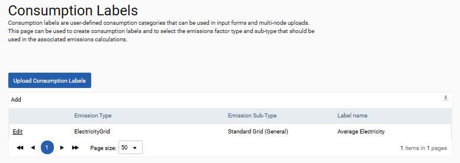

The consumption labels page allows users to apply their own naming convention to the standard consumption categories of SPM. For example, the label below creates a new consumption category called Average Electricity which uses the emissions factor typically applied to the Standard Grid (General) consumption category of electricity grid uploads. The label, Average Electricity, will be available for use in electricity input forms and is a valid entry for all bulk uploads of electricity consumption.

To add a consumption label select the Add button or upload them in bulk using the Upload Consumption Labels button and the standard template.